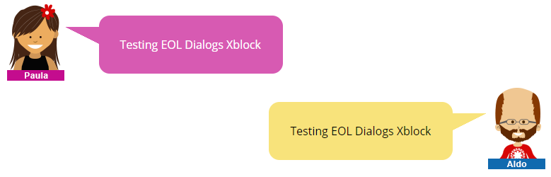
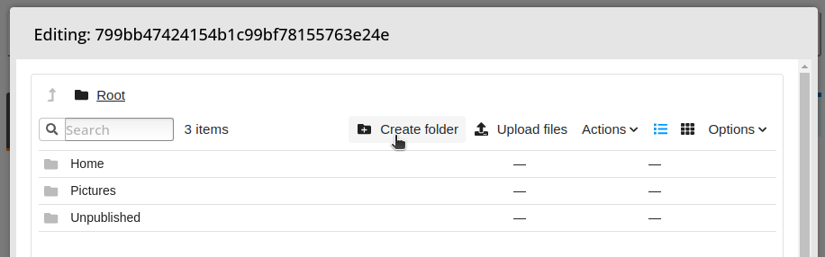
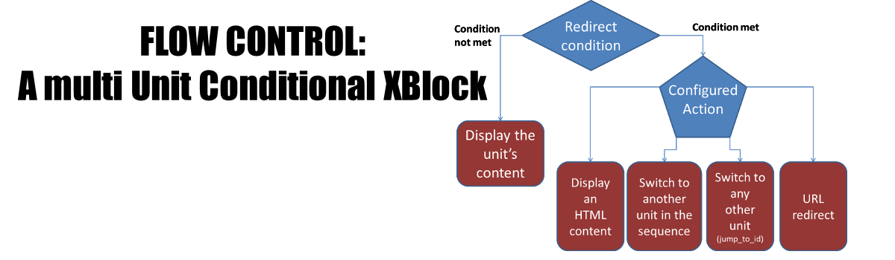

D, E, F#
Dialogs XBlock#
XBlock to display “Add and Continue” Dialogs Open edX LMS.
Vendor: University of Chile
Status: Active
Last Commit: 2024-05-14
URL: eol-uchile/eol-dialogs-xblock
License: AGPLv3
Categories: Advanced learning tools
Done XBlock#
An XBlock that let student mark when they finish an activity.

Vendor: Stanford Online
Status: Active
Last Commit: 2021-10-06
URL: pmitros/DoneXBlock
License: AGPLv3
Categories: Gradable activities
Drag And Drop problem#
Enhance your courses with interactive drag-and-drop problems, making learning more engaging and interactive.

Vendor: Open edX
Status: Active
Last Commit: 2024-08-26
URL: openedx/xblock-drag-and-drop-v2
License: AGPLv3
Categories: Course content type
End of Course Journal XBlock#
This XBlock provides the ability for a participant to download his/her activity once he/she completes the course. Currently only problem-builder freeform answers are supported. This XBlock also displays a summary of the learner’s participation, proficiency, and engagement in the course compared with the course averages.
Vendor: OpenCraft
Status: Active
Last Commit: 2023-08-28
URL: open-craft/xblock-eoc-journal
License: AGPLv3
Categories: Course content type
Feedback XBlock#
The Feedback XBlock encourages learners to reflect on their learning experiences and allows instructors to capture feedback from learners. Feedback is provided as sentiment on a predefined scale and free text feedback. Feedback can be aggregated by instructors to understand which parts of a course work well and which parts work poorly.
Vendor: Open edX
Status: Active
Last Commit: 2024-08-26
License: AGPLv3
Categories: Course content type
Files Manager XBlock#
allows course creators to add a file manager to upload/download files and create, delete and download folders, and students to view and download them.
Vendor: eduNEXT
Status: Active
Last Commit: 2024-05-22
URL: eduNEXT/xblock-filesmanager
License: AGPLv3
Categories: Course content type
Flow Control XBlock#
The Flow Control XBlock provides a way to display the content of a unit or to redirect the user elsewhere based on compliance with a condition that evaluates the submission or the score of a problem or a set of problems.
Vendor: eduNEXT
Status: Active
Last Commit: 2023-08-03
URL: eduNEXT/flow-control-xblock
License: AGPLv3
Categories: Course content type
Free Text Response XBlock#
XBlock to capture a free-text response. This package provides an XBlock for use with the Open edX Platform and makes it possible for instructors to create questions that expect a free-text response.
Vendor: Open edX
Status: Active
Last Commit: 2024-08-27
URL: openedx/xblock-free-text-response
License: AGPLv3
Categories: Course content type